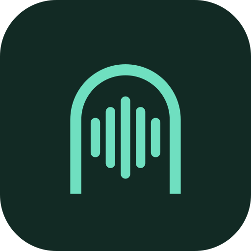

المكتبة فاضية
الصق رابط تلاوة من يوتيوب، أو رابط ملف صوتي مباشر، أو اختر ملفًا من جهازك. كل شيء يُحفظ في هذا المتصفح وحده — بلا حساب وبلا سيرفر.

تلاواتالصق رابط تلاوة من يوتيوب، أو رابط ملف صوتي مباشر، أو اختر ملفًا من جهازك. كل شيء يُحفظ في هذا المتصفح وحده — بلا حساب وبلا سيرفر.